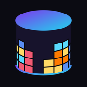
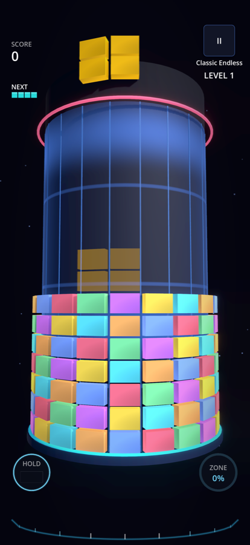
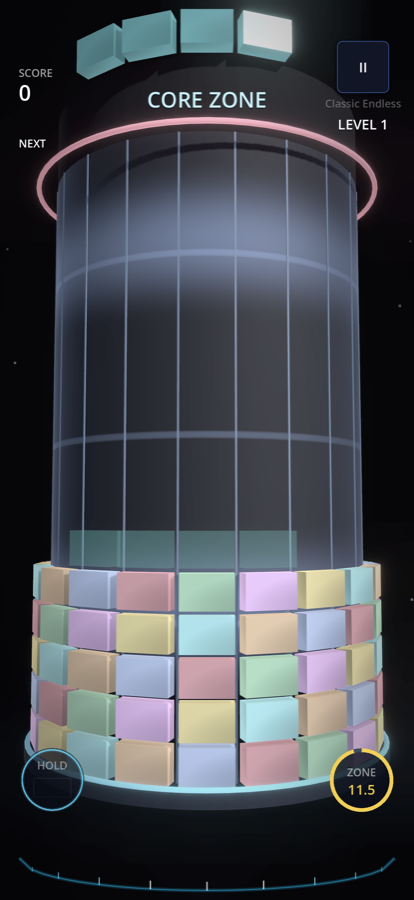
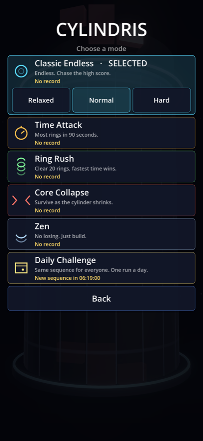

Spin the pillar. Complete the ring.
A falling-block puzzle played on the outside of a rotating 3D cylinder. The stack wraps all the way around; you spin the cylinder, not the piece.
Six modes (Classic Endless, Time Attack, Ring Rush, Core Collapse, Zen, Daily Challenge), Game Center leaderboards, haptics, and no ads. Works fully offline.



Swipe left or right to spin the cylinder under the falling piece. Tap to rotate the piece, two-finger tap to rotate the other way, swipe down to drop. Tap HOLD to keep a piece for later and ZONE to spend a charged Core Zone.
Personal records are stored on your device. Signing in to Game Center (optional) adds World and Friends leaderboards for every mode; tap the trophy on the main menu.
Open the Settings app → Game Center and make sure you are signed in, then reopen the Leaderboard screen and tap "Sign in to Game Center".
No. Cylindris runs offline and collects nothing. Game Center data is handled by Apple; see the privacy policy.
Email the device model, iOS version and a screenshot. Bugs are usually fixed in the next update.